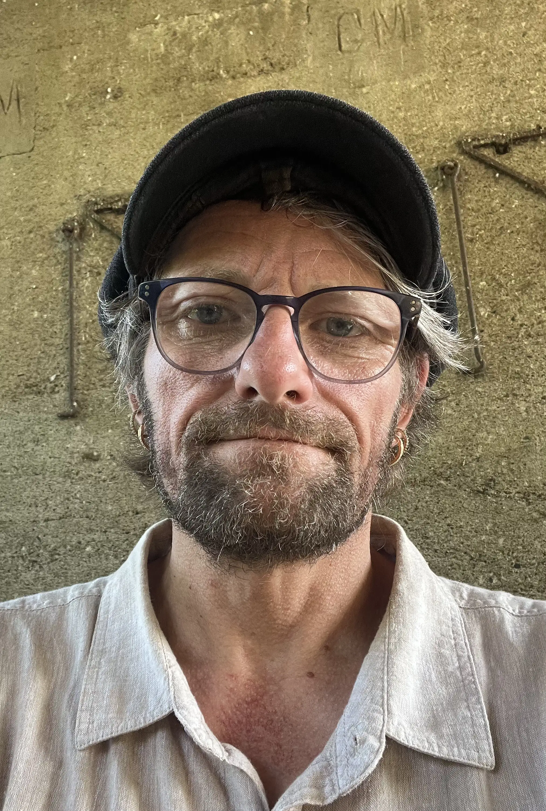

Olivier Costantino, artiste peintre à Cernay
Découvrez le parcours et la démarche artistique d'Olivier Costantino, peintre et sculpteur autodidacte installé à Cernay dans le Haut-Rhin.

Biographie
Âgé de 53 ans je suis un artiste peintre et sculpteur autodidacte dont l'univers s'ancre dans l'abstraction et l'exploration intérieure. Mes œuvres naissent d'un dialogue intime avec ce qui m'habite : émotions, visions, intuitions, fragments de rêves.
Mon parcours me permet de rester libre, sincère et profondément connecté à ma propre vision. je crée pour ouvrir des portes, pour inviter à ressentir, à imaginer, à interpréter
Chaque toile est une invitation à plonger dans un monde où la couleur, la matière et la lumière se rencontrent pour éveiller l'âme et stimuler l'imagination. Mon travail est une quête de sens, une exploration de l'invisible et une célébration de la beauté qui réside dans l'abstraction. Mon art n'est pas une imitation : C'est une exploration chaque toile est une expérience, une rencontre avec l'inconnu, un voyage vers l'essence même de la création.Un espace où je laisse émerger ce qui cherche à prendre forme.